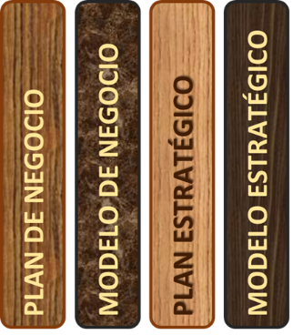
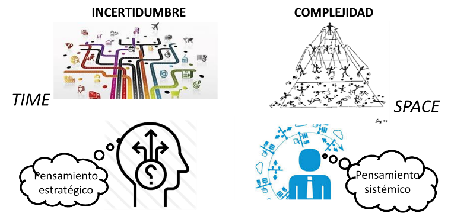
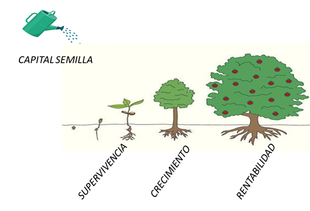
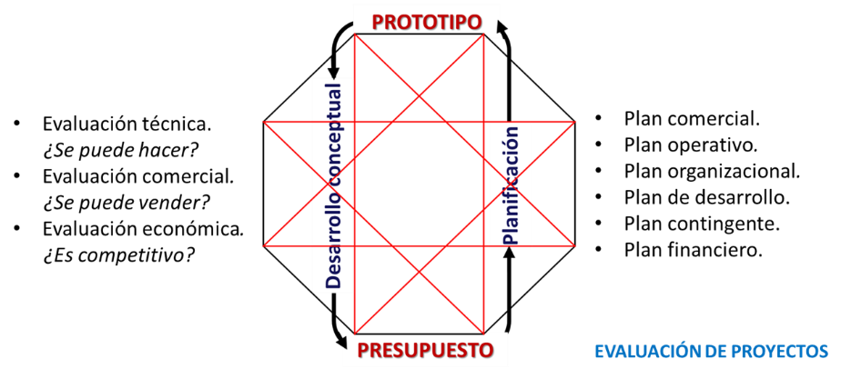
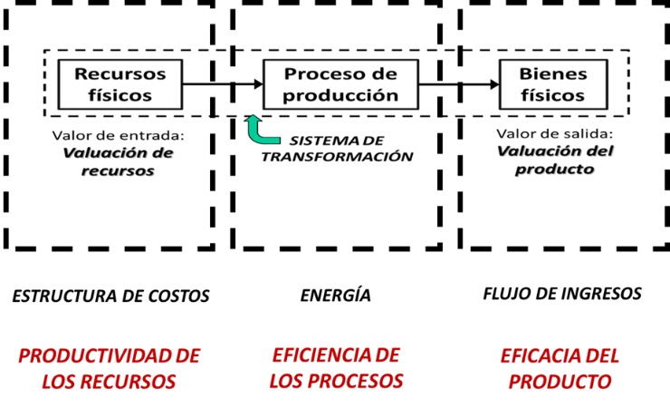
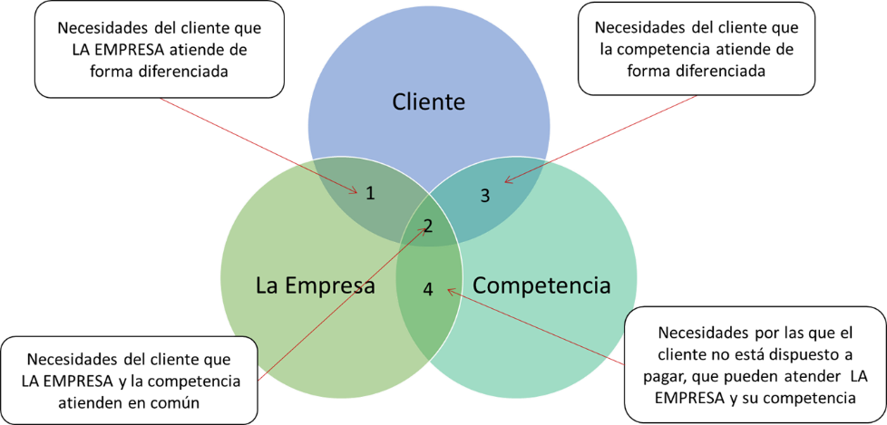
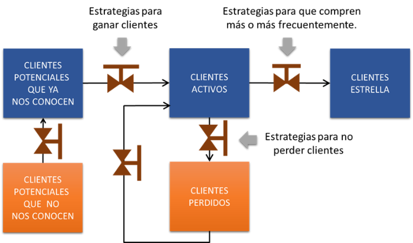
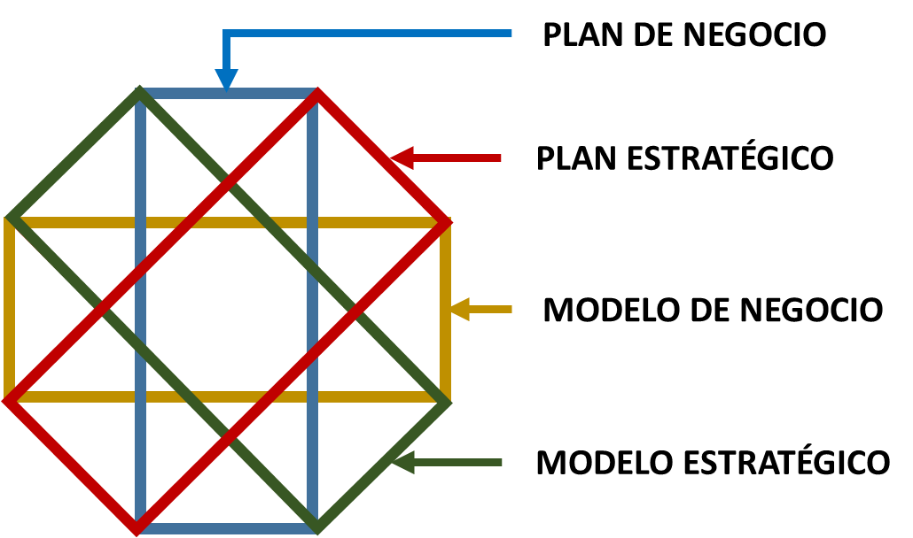
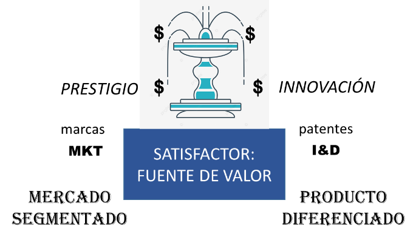

Artículos de interés
Dos planes y dos modelos
Guías para lidiar con la incertidumbre en el tiempo y la complejidad en el espacio
Un empresario o emprendedor visionario tiene cuatro carpetas en su escritorio que consulta y actualiza todos los días:

- El plan de negocio de su empresa.
- El modelo de negocio.
- Un plan estratégico.
- Un modelo estratégico.
El Octagrama de Valor® es la primera aplicación que integra las cuatro carpetas en una sola.
Dos planes y dos modelos. Los planes señalan el camino incierto rumbo a la realización de un negocio. Los modelos simplifican la realidad compleja de las empresas y su entorno.
Incertidumbre y complejidad requieren de pensamiento estratégico para una mejor toma de decisiones y de pensamiento sistémico para resolver problemas empresariales de manera efectiva.

¿Cuáles son los imperativos empresariales?
Cuando una empresa incipiente ha superado la etapa embrionaria de la supervivencia, aún tiene dos imperativos que atender: crecimiento y rentabilidad. Para sobrevivir hay que crecer, y para crecer, la empresa tiene que alcanzar la rentabilidad suficiente para que sus grupos de interés continúen apoyándola. Y esto aplica también para las empresas maduras y consolidadas.

Plan de negocio (business plan)
El plan de negocio sienta las bases para evaluar la factibilidad técnica, comercial y económica de los proyectos, programar su ejecución y financiamiento y obtener el visto bueno de los inversionistas para su realización. Los proyectos son fundamentales para el crecimiento de la empresa.

Modelo de negocio (business model)
El modelo de negocio hace operativos los planes de negocio. Es un ciclo en el que se gestiona la oferta y la demanda y que se retroalimenta continuamente. Representa una serie de procesos que agregan valor a recursos productivos, transformándolos eficientemente en productos terminados que satisfacen eficazmente las necesidades de los clientes.

Plan estratégico (strategic plan)
El plan estratégico sienta las bases para la competitividad y la innovación. Consta de cuatro fases: la evaluación del entorno económico y social, el análisis del mercado y la industria, el diagnóstico de la posición estratégica de los sectores de negocio, y la formulación y programación de estrategias competitivas.

Modelo estratégico (strategic model)
El modelo estratégico hace operativas las estrategias de marketing mediante la comercialización creativa. Uno de los activos más importantes de una empresa es su prestigio. La buena reputación se gana con propuestas de valor progresivas que se cumplen a cabalidad, y así la empresa siempre podrá negociar mejores precios.

Dos planes y dos modelos que interactúan entre sí en tiempo real.
En el Octagrama de Valor® pueden visualizarse estas interacciones y así descubrir las infinitas posibilidades disponibles para potenciar el desempeño de la empresa.

Manantiales de valor
Para que una empresa mantenga su crecimiento y rentabilidad consistentemente, tiene que ser competitiva, es decir, mejor que sus competidores, y tiene que ganarse la lealtad de sus clientes con propuestas de valor progresivas que honre siempre.
